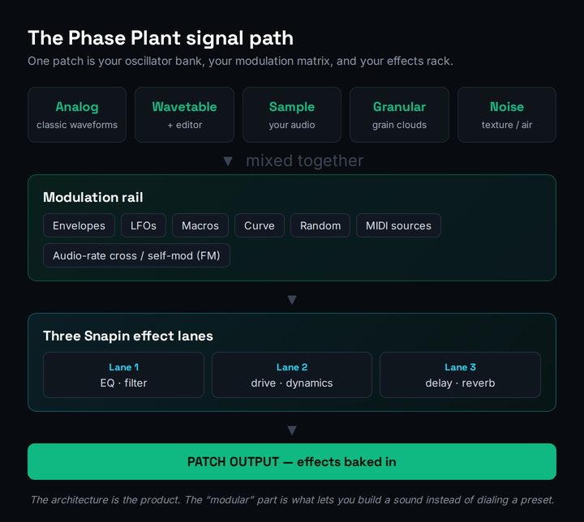

Most Phase Plant reviews fall into one of two traps. They either treat it as “another wavetable synth” and line it up against Serum 2 on preset count and oscillator quality, or they get lost in the modular sandbox and call it “limitless” without ever telling you what that costs. Both miss the one thing a producer actually needs to decide. Phase Plant is not the tenth wavetable synth you’re choosing between. It’s a different kind of instrument: the synth you build the synth in. The buying question is whether that freedom pays off for the way you work, or whether you’d be finished faster with a focused tool.
So here is the honest version up front. Phase Plant is the most architecturally open softsynth a producer can buy at this price — an empty canvas where you stack generators, route modulators into almost anything, and chain Kilohearts’ Snapin effects right inside the patch. For a sound designer who builds evolving textures, resamples their own material, and wants one instrument that is also their modulation matrix and their effects rack, nothing in the range matches its depth-per-dollar. But that openness is the catch as much as the appeal. The blank canvas that thrills a builder overwhelms a preset-first producer, and the “$199 and done” headline ignores the quiet economy of premium Snapins and content banks that the ecosystem is designed to sell you. This review is about that trade — the freedom, the ecosystem, and the honest cost of both.
How we approached this. We re-verified every price, tier, generator, and feature against Kilohearts’ live store and product pages this session, plus current third-party reviews and the active user community — not older write-ups, several of which pre-date the Granular generator. This is a reasoning-and-documentation review, not a first-party benchmark: we did not run a controlled CPU or audio test in our own room, so every judgement about how Phase Plant performs is framed as reasoning from documented behaviour and the consensus of producers who use it daily — never a fabricated “our CPU meter read” number. Where a figure could move, we tell you to confirm it on the live page. Let’s get into it.
Phase Plant is the most flexible sound-design synth you can run as a normal plugin — a modular host where generators, modulators, and Snapin effects combine into virtually any synthesis style, all baked into the patch. Buy it if you build your own sounds — evolving pads, designed textures, resampled bass, FM tones — and you enjoy the patching as much as the result. Skip it if you want to open a synth, scroll presets, and finish a track; Serum 2 or free Vital will make you faster. The $199 perpetual with lifetime updates is the long-run-cheapest path if Phase Plant becomes a main synth; the $9.99/month subscription is the smart way to trial the whole ecosystem first. Used as the instrument it is, it’s outstanding. Mistaken for a fast preset machine, it’ll sit unused.
The Verdict
The most open, most patchable softsynth in its price class — a sound designer’s dream and a preset-hunter’s frustration, worth every dollar if you’ll actually build with it.
| Sound quality (generators & processing) | 9.2 | |
| Modular flexibility | 9.4 | |
| Modulation depth | 9.1 | |
| CPU efficiency | 8.6 | |
| Value & ecosystem | 8.4 | |
| Workflow & learning curve | 7.6 | |
| Who-it’s-for clarity | 8.8 |
That overall is a defended judgement, not an average, and the spread is the whole story. Modular flexibility (9.4) is where Phase Plant leads the category outright — nothing else lets you stack generators, cross-modulate at audio rate, and bake an effects chain into the patch this freely. Sound quality (9.2) and modulation depth (9.1) are right behind: the generators are clean and the modulation system is close to open-ended. CPU efficiency (8.6) is a genuine strength Kilohearts engineers for, though a heavy multi-generator patch will still tax a modest machine. Value (8.4) is good but honest — $199 with lifetime updates is fair, but the Snapin and content-bank economy adds up if you let it. The number that pulls the overall to 8.8 is the one that matters most for your expectations: workflow and learning curve (7.6). The blank canvas that makes Phase Plant powerful is also the reason a beginner can open it, freeze, and close it. That gap between “limitless” and “finished a track today” is the truth the hype reviews skip, and every number above is defended below.
What Phase Plant Actually Is
Before anything else, get the category right, because it’s the single most common mistake people make when they shop for a synth. Most producers treat synthesis style as fixed — you pick wavetable, or FM, or analog, or granular, and you buy the synth that does that thing well. Phase Plant exposes that framing as outdated. It is a semi-modular softsynth: an open architecture where you combine as many generators, modulators, and effects as you need inside a single patch. You can run a wavetable oscillator next to an analog one, drop in a granular generator, cross-modulate one into another for FM tones, and push the whole thing through an effects chain — all in one instrument. It is, quite literally, the synth you build the synth in. If synthesis itself is new to you, our primer on what a synthesizer is covers the building blocks Phase Plant assumes you already understand.
That distinction is the entire buying decision. A focused synth like Serum answers “I want great wavetable sounds, fast.” Phase Plant answers a different question: “I want to design a sound that doesn’t exist yet, from the ground up.” Its generator section offers five sound sources — the Analog oscillator for classic subtractive waveforms, the Wavetable oscillator with an advanced built-in editor, the Sample player, the Noise generator, and the Granular engine, a more recent flagship addition that plays short grains of any sample you load. Above and around them sits an open modulation system where you add envelopes and LFOs as you need them and route them to almost any parameter, and three effects lanes that host Kilohearts’ Snapins. The result is one patch that is simultaneously your oscillator bank, your modulation matrix, and your effects rack.
The word that matters in “semi-modular” is semi, and it’s a feature, not a limitation. A true modular system — hardware Eurorack, or a software environment like a patching playground — asks you to wire up everything, including the plumbing, before you make a sound. Phase Plant keeps the plumbing fixed: there’s always a defined signal path from generators through effects to output, voice handling is managed for you, and MIDI just works. What’s open is the part that actually shapes your sound — which generators you stack, which modulators you add, where they route. That design choice is why Phase Plant can feel modular-deep without being modular-painful, and it’s the single biggest reason it’s a more realistic daily driver than a fully open patching environment for a producer who still has tracks to finish. You get the creative freedom where it counts and a guard rail everywhere else.
The Architecture: Generators, Modulators, Three Snapin Lanes
Picture the signal as a stack you assemble top to bottom. At the top sit your generators, mixed together however you like — layer a fat analog saw under a moving wavetable, add a grain cloud for texture, sprinkle filtered noise for air. Below them runs the modulation rail: ADSR envelopes with editable curves, LFOs with tempo sync and phase offset, macros you can automate from your DAW, a hand-drawn curve modulator, a random sample-and-hold, MIDI sources like velocity and aftertouch, and — the part that sets it apart — audio-rate modulation that lets any generator cross-modulate or even self-modulate the volume, frequency, and phase of another. That is real FM, not an LFO approximation, and it’s where Phase Plant’s strangest and best tones come from. Then the whole signal flows into three effects lanes built from Snapins, and out.

The reason that architecture matters is depth of routing. In a fixed-architecture synth, the modulation matrix is a list of destinations someone else decided you’d need. In Phase Plant, almost nothing is off-limits as a modulation source or destination, and you only add the modules a given patch actually uses, so the interface stays as simple or as deep as your sound demands. Producers who want to understand modulation routing properly — not just twist a macro and hope — will find Phase Plant the best teaching instrument on the market precisely because it makes the signal path visible. If you're building it as a foundation for layering synths or for the kind of designed low-end that powers bass music, the same flexibility that overwhelms a beginner becomes the reason you never reach for another instrument.
Two architectural details deserve their own mention because they’re where a lot of Phase Plant’s character lives. The first is the advanced Wavetable Editor: rather than only loading wavetables, you can design and edit your own, drawing or importing the waveforms that the Wavetable oscillator then scans — the same hand-built-source approach our synthesis parameter reference walks through, except baked into the synth. The second is generator groups and the multiple effects lanes: you can group generators and process them independently, run parallel signal paths, and apply different Snapin chains to different parts of a patch, which is how a single Phase Plant instance can hold what used to take three plugins and a bus. Combined, those two features are why a finished Phase Plant patch so often sounds like it was made in a studio rather than a synth — the sound design and the processing are one continuous act, not two separate stages.
Where It Genuinely Shines
Four things stand out, and they cluster around one idea: this is the tool for a producer who wants to design a sound, not pick one. First, evolving and textural patches — because you can stack generators and modulate anything with anything, Phase Plant excels at the moving pads, cinematic drones, and shifting textures that fixed synths flatten. Second, resampling and sound design from scratch: the Granular engine plus the Sample player turn your own recordings into raw material, and the audio-rate modulation lets you mangle them into something new. Third, the everything-in-one-patch workflow — keeping your effects processing inside the synth, baked into the preset, means a sound you build travels with its full character instead of depending on a separate FX chain you have to rebuild.
Fourth, and most decisive for a serious workflow, is the Snapin spine. Phase Plant’s effects are the same Kilohearts Snapins that run standalone in your DAW and inside the company’s other modular hosts, Snap Heap and Multipass. Learn the ecosystem once and your Disperser, Faturator, or Slice EQ moves are available everywhere — inside the synth, on a mix bus, or in a custom effects rack. For producers who care about building a coherent personal toolkit rather than collecting one-off plugins, that consistency is the whole reason to buy in. Combined with clean generators and genuinely deep modulation, it’s why experienced users describe Phase Plant’s versatility as “a fresh take” once they’ve learned it. The catch, as always, is that learning it is the job.
The Snapin Ecosystem: The Real Differentiator
If you only take one idea from this review, take this one, because it’s the thing Serum and Vital simply don’t have and it’s the spine of the “is it worth it” answer. When you buy Phase Plant you aren’t only buying a synth; you’re buying into the Snapin ecosystem. Snapins are Kilohearts’ modular effects format, and the same little processors that fill Phase Plant’s three effects lanes — reverb, delay, distortion, EQ, dynamics — also run as standalone plugins on any track in your DAW and slot into the company’s other modular hosts, Snap Heap and Multipass. Your account comes with Kilohearts Essentials, a suite of 30 of these effects, free. Learn a Snapin once and that knowledge is portable across your whole session, not locked inside one instrument.
That portability is what changes the value calculus. A reverb move you discover inside a Phase Plant pad is the same reverb you can drop on a vocal bus; a distortion chain you build in Snap Heap can be saved and recalled inside a synth patch. Over time you stop assembling effects from a grab-bag of unrelated plugins and start working in one consistent, modular toolkit that follows you everywhere. The honest flip side — the one to keep your eye on — is that the ecosystem is also a store. The free Essentials cover most needs, but the premium Snapins (Disperser’s phase-bending sweep, Faturator’s grit, Multipass’s band-splitting, Slice EQ’s surgical curves) are sold separately and are genuinely tempting, and the steady drip of $29 content banks is designed to keep you spending. Bought deliberately, the ecosystem is the best argument for choosing Phase Plant over a standalone synth. Bought impulsively, it’s the “Kilohearts spiral” the community jokes about. The discipline is the same one this whole review keeps returning to: buy for the sound in front of you, not the collection in your head.
The Blank Canvas: The Real Cost Is Time
Now the part the enthusiast reviews gloss over, because it’s the part that decides whether Phase Plant earns a place in your workflow or gathers dust. A blank patch is not a finished sound; it’s an invitation to build one, and you need to know what that build involves before you decide the $199 is “worth it.” The cost of this tool is partly measured in your time, and for a preset-first producer that cost is real.
The first and biggest hurdle is the empty-canvas problem. Open Serum and you get an oscillator, a filter, and an envelope already wired — you’re making sound in seconds. Open a blank Phase Plant patch and you get nothing until you place a generator, which is liberating for a builder and paralysing for a beginner. The factory preset library exists and is good, but it’s smaller than a ROMpler’s, because Phase Plant rewards people who build rather than browse. The second hurdle is routing literacy: the power lives in modulation, and modulation only helps once you understand sources, destinations, and audio-rate behaviour — concepts our modulation guide and the free synthesis-type selector and synthesis parameter reference exist to flatten. The third is simply discipline: an instrument with no walls makes it easy to keep tweaking a patch forever instead of finishing a track.
None of this is a knock on the tool — it’s the same trade every modular system makes: more freedom, more responsibility. The skills transfer directly from any synthesis workflow, and the visual, add-what-you-need interface is genuinely the gentlest on-ramp a modular synth has offered. The honest point is about expectation. Producers who treat Phase Plant as a craft instrument — sitting down to build, learning a few Snapins at a time, leaning on the factory patches as teaching material — get extraordinary results and rarely look back. Producers who expect to open it and finish a beat in twenty minutes get frustrated and conclude it’s “overcomplicated.” Both are describing the same software; the difference is entirely in what they came to do. A first-class envelope and pitch tool like the one our ADSR visualizer teaches will feel familiar fast; the architecture around it is what takes a few weeks to own.
The good news is that the climb is well-supported and front-loaded — you do the hard learning once. Kilohearts maintains thorough documentation and a steady stream of official tutorials, the user community is unusually generous with patch breakdowns, and because the interface makes the signal path visible, every patch you open is a lesson you can read. The practical advice from experienced users is consistent: don’t try to learn everything at once. Learn the five generators, then the core modulators, then add Snapins one at a time as a specific sound calls for them. Treat your first month as deliberate practice rather than production, lean on the factory library as worked examples, and the instrument that felt overwhelming in week one becomes the one you reach for first by week six. The learning curve is real, but it’s a curve, not a wall — and what’s on the other side is a synth you can make do almost anything.
The True Cost: Perpetual vs Subscription vs Rent-to-Own
Here’s the math nobody puts up front, and it’s the house move applied to spend: name the real cost, then manage it. Phase Plant has a regular price of $199 as a one-time perpetual license — you own it, and Kilohearts’ standing promise is lifetime free updates, so you never pay for a new version. It frequently goes on sale (it’s been seen around $119, and Phase-Plant-plus-content bundles lower still), so patient buyers can do better than the sticker. There’s also a 10-day free trial with the full instrument, so you can test the actual workflow before paying. So far, so reasonable — and cheaper over a few years than renting a comparable synth forever.
But the perpetual price is one of three doors, and choosing the right one is most of the value decision. The Kilohearts Subscription is $9.99/month and includes every Kilohearts plugin and content bank, plus instant access to new releases — and for every twelve months you subscribe you earn $100 in Subscriber Rewards that convert toward permanent licenses. That makes the subscription the smartest way to trial the whole ecosystem, or to cover an occasional-use period, without committing $199 up front. The third door is Splice rent-to-own, which spreads the perpetual cost into small monthly payments until you own it outright. The quiet cost to name — the one the marketing won’t — is the Snapin spiral: the bundled Kilohearts Essentials gives you 30 free effects, but the premium Snapins (Disperser, Faturator, Multipass, Slice EQ and friends) and the $29 content banks are an add-on economy designed to keep selling you pieces of the ecosystem.
![A buying-logic decision card for Phase Plant comparing three ways to pay. Perpetual is one hundred ninety-nine dollars with lifetime free updates, best if Phase Plant becomes a main synth and often cheaper on sale. Subscription is nine dollars ninety-nine cents per month for every Kilohearts plugin and content bank, best to trial the whole ecosystem or for occasional use, and it earns rewards toward permanent licenses. Splice rent-to-own spreads the perpetual cost into monthly payments until you own it. A footer line names the quiet cost: premium Snapins and content banks are sold separately. Confirm current prices at kilohearts.com.](../images/phase-plant-buying-logic-fork.png)
So the value verdict is strong but conditional. If Phase Plant becomes a main synth you’ll use for years, the perpetual license is the long-run-cheapest path, and lifetime updates mean it keeps improving without re-purchase — a genuinely producer-friendly model in an era of forced upgrades. If you’re not sure yet, or you want to explore the wider Kilohearts toolset, the subscription de-risks the decision and even banks credit toward owning it. The trap to avoid is treating the $199 as the whole cost and then drifting into buying every premium Snapin on sale. The honest rule: buy the synth for the sounds you’ll actually build, add Snapins only when a specific patch demands one, and the ecosystem stays an asset instead of a subscription you forgot you were paying.
One more piece of the value math deserves spelling out, because it’s where Phase Plant quietly wins against the industry trend. The perpetual license carries lifetime free updates — not free updates within one major version, but free updates, full stop, as Kilohearts has stated and practised. In a market drifting toward paid major-version upgrades and rental-only access, a one-time purchase that keeps improving for years is genuinely rare, and it changes the long-run cost picture. Spread $199 (or a sale price nearer $119) across the five-plus years a producer typically keeps a favourite synth, and the annual cost rounds to almost nothing — cheaper than a single year of many subscription rivals. The break-even logic is simple: if you’ll use Phase Plant past roughly the eighteen-month mark, owning it outright is the cheaper path; below that, or if you’re still exploring, the subscription’s flexibility and reward credit make more sense. Either way, you’re not renting your main instrument forever, which is a producer-friendly stance worth paying a fair price for.
Phase Plant vs Serum 2 vs Vital: Who It’s For
The buyer’s fork has three clean prongs, and naming them correctly is most of the decision. If your problem is “I design my own sounds and want one modular instrument that does everything,” Phase Plant is the answer — its generator-modulator-Snapin architecture covers analog, wavetable, FM, granular, and sample-based work in a single patch, and nothing in the price range matches that breadth. If your problem is “I make tracks and want great wavetable sounds fast,” Serum 2 is the more productive choice: a focused, preset-rich wavetable workflow with a dedicated editor and an enormous community library that will make you faster than Phase Plant’s generalist approach. And if your problem is “I want a capable wavetable synth and I’m on a budget,” free Vital delivers a remarkable amount of Serum-style power for nothing.
![A who-it-is-for decision framework comparing Phase Plant, Serum 2, and Vital. Phase Plant suits sound designers building evolving textures, resampling their own material, and wanting one modular instrument for analog, wavetable, FM, and granular synthesis. Serum 2 suits preset-first producers who want a fast, focused wavetable workflow and a large preset community. Vital suits budget-bound producers who want a capable wavetable synth for free. A footer reads: a decision framework, not a measurement.](../images/phase-plant-vs-serum-vs-vital.png)
The honest cross-shop doesn’t stop at those three. Against Arturia Pigments, Phase Plant trades Pigments’ gorgeous, more guided multi-engine interface for deeper, freer routing — Pigments is friendlier, Phase Plant is more open. Against the cinematic breadth of Omnisphere 3, Phase Plant is a sound-builder where Omnisphere is a vast library you browse. And against a classic like Massive, Phase Plant simply offers a generation more architecture. If you’re still narrowing the field, our roundups of the best synth plugins and the best plugins for sound design place all of these in context, and the existing head-to-head on Serum 2 vs Phase Plant drills into the single most common comparison in detail; if budget is the deciding factor, our roundup of the best free VST plugins covers the no-cost options in full. The pattern across all of them is the same: Phase Plant is the pick when the sound you want doesn’t exist yet and you intend to build it.
Who Should Buy It, Who Should Skip It
Buy Phase Plant if you design your own sounds — evolving pads, cinematic textures, designed bass, FM tones, resampled material — and you enjoy the building as much as the result. Buy it if you want one modular instrument that replaces three or four single-purpose synths and grows with you instead of being out-grown. Buy it if you value owning your tools with lifetime updates rather than renting them, and if you want to invest in the Snapin ecosystem so your effects moves are consistent across the synth, your busses, and your custom racks. And buy it if you’re the kind of producer who learns an instrument deeply and keeps it for years; Phase Plant rewards exactly that commitment.
Skip it — or rather, buy something else — if you want to open a synth, scroll presets, and finish a track today; that’s a focused tool like Serum 2 or free Vital, and no amount of learning Phase Plant will make it the faster preset machine. Skip it if you’re a committed beginner who finds blank canvases discouraging, because the empty patch can stall you before you make a sound. Skip it if your budget genuinely stops at zero, where Vital is the honest recommendation. And weigh it carefully if you never resample, never design textures, and only ever want bread-and-butter presets — you’d be paying for flexibility you won’t use. The honest test is the one we opened with: if you build sounds, this is the best modular instrument at the price. If you load sounds, you’re shopping in the wrong aisle.
Try It Yourself (Free Trial)
The fastest way to know whether Phase Plant fits your workflow is to run the 10-day free trial and put it through the three jobs below, in order. They move from “does the architecture click for me” to “can I build a sound from nothing,” which is the question that actually matters. Keep our modulation and wavetable synthesis references open alongside the trial if the routing is new to you.
- Install the trial, open a complex factory preset you like, and look at how it’s built — which generators are stacked, which modulators are wired where.
- Mute generators one at a time and remove modulators to hear what each contributes. Note which single change does the most.
- Rebuild one element from scratch in a new patch. This is the gentlest on-ramp Phase Plant offers — learn by taking a sound apart.
- Start empty. Add a Wavetable generator and an Analog generator, detuned slightly against each other for width.
- Add an LFO and route it to the wavetable position; add an envelope to the filter cutoff so the pad opens as it plays.
- Drop a reverb and a chorus Snapin into the effects lanes. You’ve just built a sound that didn’t exist — the thing Phase Plant is for.
- Route one generator’s output to modulate another’s frequency at audio rate to create an FM tone, then load a sample into the Granular generator and cross-modulate it.
- Automate a macro across the patch to make the whole sound evolve over eight bars.
- Bounce the result and drop it into a real mix. Ask the only question that counts: could you have made this sound any other way as fast?
The Verdict
Phase Plant is the best modular softsynth a sound designer can buy in 2026 — the most open architecture in its price class, genuinely deep modulation, clean generators including a strong Granular engine, and a Snapin ecosystem that ties your synth, busses, and effects racks into one coherent toolkit, all owned outright with lifetime updates. At an 8.8 it earns a clear recommendation for the producer it’s built for. The point that keeps it from higher is the point of honesty: that freedom has a learning curve, and the blank canvas that thrills a builder will stall a preset-first producer. Go in expecting an instrument you build with, and it’s exceptional. Go in expecting a fast preset machine, and you’ll be the one writing the “overcomplicated” review.